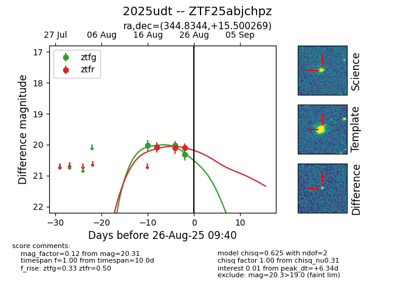

Target 2025udt at 2025-08-26 09:40, see:
FINK: fink-portal.org/ZTF25abjchpz
Lasair: lasair-ztf.lsst.ac.uk/objects/ZTF25abjchpz
ALeRCE: alerce.online/object/ZTF25abjchpz
TNS: wis-tns.org/object/2025udt
YSE: ziggy.ucolick.org/yse/transient_detail/2025udt
alt names
ZTF25abjchpz (ztf,fink)
2025udt (tns,yse)
coordinates:
equatorial (ra, dec) = (344.8344,+15.50027)
galactic (l, b) = (87.0425,-39.43461)
photometry
last ztfg=20.31, ztfr=20.09
4 ztfg, 3 ztfr detections
